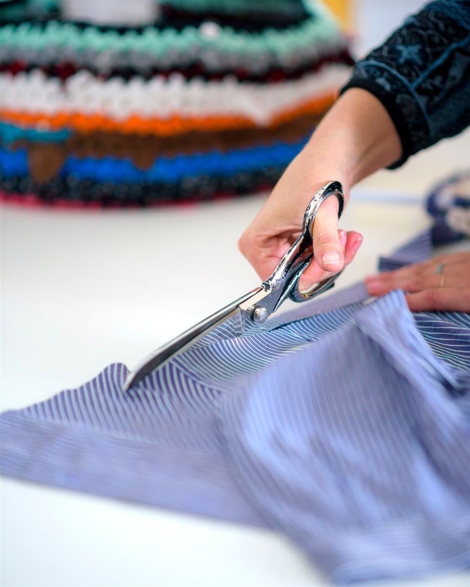

In breve. Da una maglietta di cotone si ricava un filo lungo e continuo, la fettuccia, tagliando il tessuto a spirale: tagli orizzontali che si fermano poco prima del bordo, uniti da un taglio in diagonale. Da un lenzuolo o da una camicia, che sono tessuti diversi (non si arricciano da soli come la maglia), si taglia a strisce con lo stesso principio, a zig-zag, fermandosi sempre a un paio di centimetri dal bordo. Il risultato si usa all'uncinetto o ai ferri per fare ceste, borse e tappeti, senza comprare niente di nuovo. La larghezza giusta cambia da tessuto a tessuto: qui vedi il metodo, non le misure.
Cosa serve
- Una maglietta di cotone (o un lenzuolo, o una camicia) che non usi più, pulita e asciutta.
- Un paio di forbici buone, che taglino dritto fino in fondo alla lama.
- Un tavolo libero dove stendere il tessuto per intero.
- Facoltativo: un righello o un metro da sarta, se vuoi tagli regolari.
Come si taglia una maglietta a spirale
- Stendi bene la maglietta su un tavolo, dritta, senza pieghe.
- Taglia via l'orlo in basso e la parte alta con le maniche e il collo: restano un corpo cilindrico, davanti e dietro ancora uniti sui due lati.
- Piega il tubo in due nel senso della lunghezza, ma non a filo: lascia sporgere di un paio di centimetri lo strato di sotto.
- Taglia strisce orizzontali dalla piega verso il bordo, attraverso tutti e due gli strati, fermandoti dove comincia la parte che sporge: lì il tessuto resta intero, come una fascia continua che tiene insieme tutte le strisce.
- Apri il tubo e infila la mano nella fascia rimasta intera, così da tenerla aperta. Ora unisci gli anelli con tagli in diagonale: il primo dal bordo alla prima striscia, poi da ogni striscia a quella successiva, fino in fondo. Gli anelli separati diventano una spirale unica: hai in mano un filo solo.
- Tira leggermente la fettuccia tra le due mani: il cotone della maglia si arriccia da solo sui bordi e diventa più simile a un cordoncino che a una striscia piatta.
- Avvolgi tutto a gomitolo, pronta per l'uncinetto o i ferri.
Una sola maglietta da adulto, tagliata così, dà diversi metri di fettuccia continua, senza nodi e senza sprechi.

Come si taglia un lenzuolo (o una camicia) a strisce continue
Il lenzuolo, come la camicia, è un tessuto «piano»: non si arriccia da solo come la maglia della t-shirt, perché è tessuto e non lavorato a maglia. Il principio del taglio continuo resta lo stesso, cambia solo la tecnica:
- Stendi il lenzuolo per intero e taglia una prima striscia dal bordo lungo, su tutta la lunghezza.
- Da quella striscia, pratica tagli a zig-zag: tagli dal lato destro che si fermano a un paio di centimetri dal lato sinistro, poi tagli dal lato sinistro che si fermano a un paio di centimetri dal lato destro, alternando.
- Il risultato, aperto, è una striscia unica che va avanti e indietro invece che in cerchio, ma funziona allo stesso modo: tiri, e si apre tutta in una striscia continua.
- Arrotola a gomitolo, come per la maglietta.
Il lino e il cotone piano non si arricciano come la maglia: restano piatti, un po' meno morbidi al tatto, ma più resistenti e con un bordo che tiene meglio nel tempo. Vanno benissimo per ceste rigide e tappeti, meno per le borse morbide.
Cosa farci
- Ceste e cestini all'uncinetto, lavorati a spirale come si fa con la fettuccia comprata.
- Borse: qui il tessuto conta molto; una fettuccia troppo sottile o troppo spessa cambia tutto il risultato.
- Tappeti, tagliando più magliette o lenzuola dello stesso colore o a fantasia mescolata.
- Manici per le stesse borse o ceste, lavorando la fettuccia più stretta.
Il punto dove la maggior parte delle persone si blocca non è il taglio, ma la larghezza: un tessuto sottile come una maglietta estiva vuole una striscia diversa da un felpato pesante, e lo stesso vale per un lenzuolo fine o uno ruvido. È la parte che ho imparato provando, gomitolo dopo gomitolo, e che spiego per intero quando mostro dal vivo come lavoro io.
Maglietta o lenzuolo: cosa cambia
| Maglietta (maglia) | Lenzuolo o camicia (tessuto piano) | |
|---|---|---|
| Si arriccia da sola | Sì, tirandola | No, resta piatta |
| Quantità da un capo | Diversi metri da una maglietta adulta | Molta, un lenzuolo matrimoniale ne dà tanta |
| Risultato al tatto | Morbido, elastico | Più rigido, resistente |
| Uso consigliato | Borse morbide, manici | Ceste, tappeti, basi rigide |
Domande frequenti
Come si fa la fettuccia da una maglietta?
Si taglia la maglietta a spirale: il corpo piegato in due si taglia a strisce orizzontali che si fermano prima del bordo, poi le strisce si uniscono con tagli in diagonale, fino a ottenere un filo unico e continuo. Tirandola, si arriccia da sola.
Si può fare la fettuccia anche da un lenzuolo?
Sì, con lo stesso principio ma in strisce a zig-zag invece che a spirale, perché il lenzuolo è un tessuto piano e non si arriccia da solo come la maglia.
Che larghezza deve avere la fettuccia?
Dipende dal tessuto di partenza e da cosa vuoi farci: un tessuto sottile e uno spesso vogliono strisce diverse. È il punto che richiede più pratica, e lo spiego quando mostro il lavoro dal vivo.
Quale uncinetto si usa con la fettuccia?
Serve un uncinetto grosso, adatto alla fettuccia, più grande di quello che si usa con un filo normale: la misura esatta dipende dallo spessore della tua fettuccia.
Quanta fettuccia si ricava da una maglietta?
Diversi metri da una sola maglietta da adulto, a seconda di quanto è larga e di quanto stretta fai la striscia.
Ogni mese, nella mia newsletter, racconto un progetto da cucire con quello che c'è già in casa: tessuti, ritagli, vestiti che non si mettono più. Ti iscrivi qui sotto.